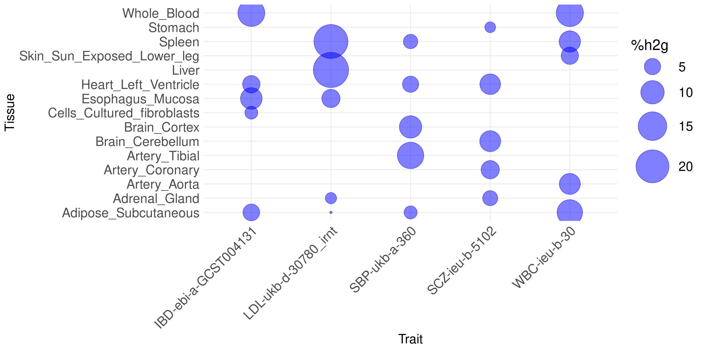
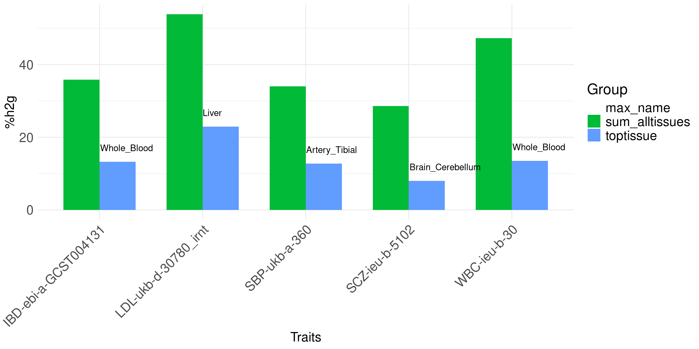
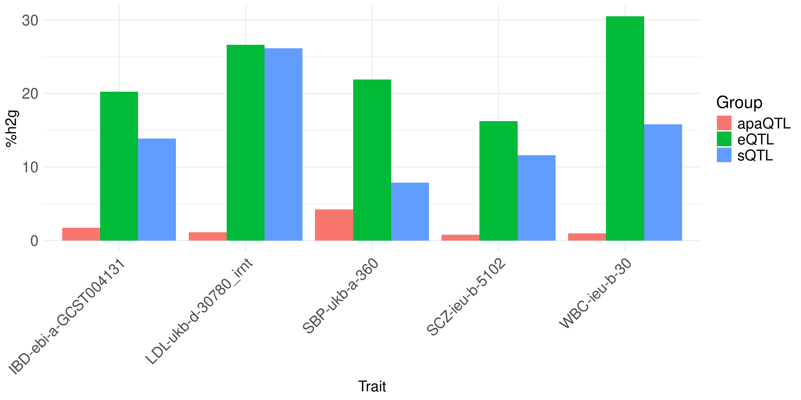
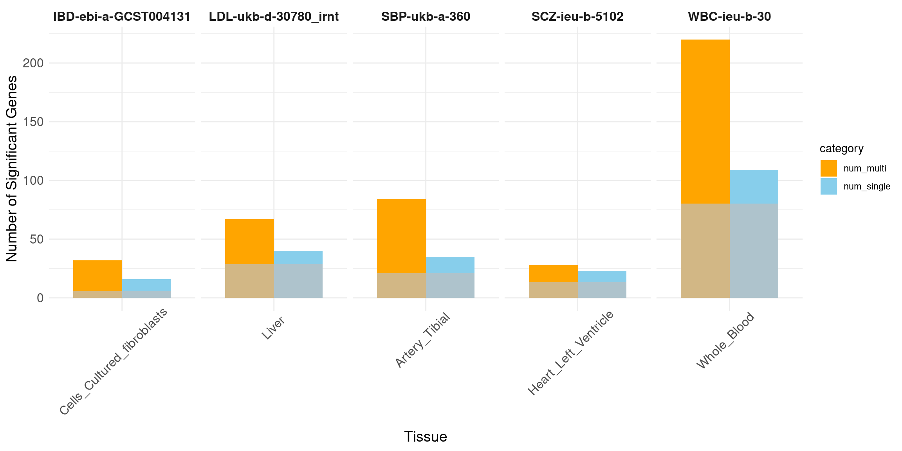
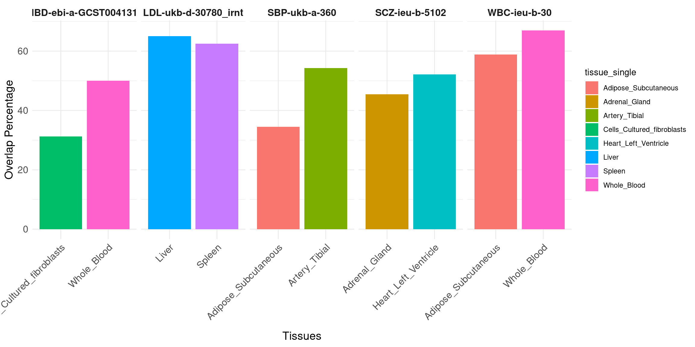
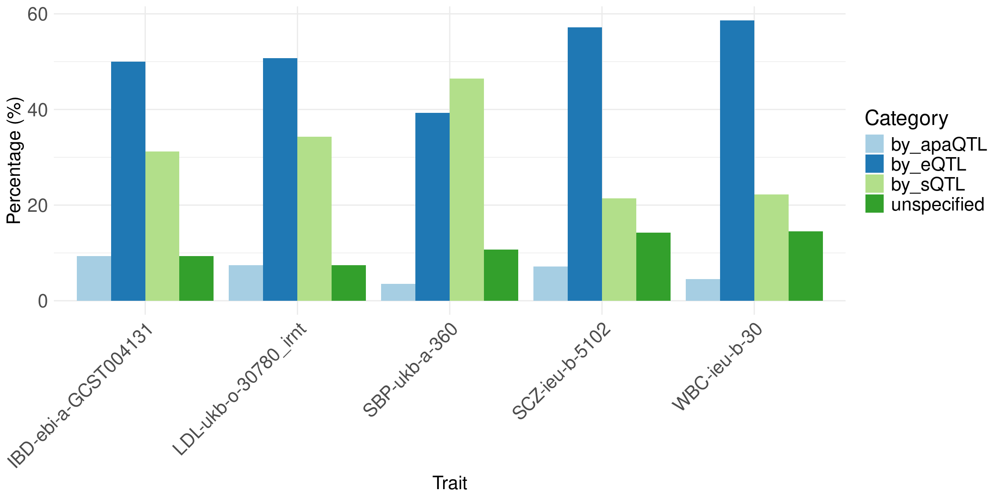

Summary for 6 Traits, 5 tissues, eQTL + sQTL + apaQTL – compute ukbb LD
XSun
2024-06-02
Last updated: 2024-06-03
Checks: 6 1
Knit directory: multigroup_ctwas_analysis/
This reproducible R Markdown analysis was created with workflowr (version 1.7.0). The Checks tab describes the reproducibility checks that were applied when the results were created. The Past versions tab lists the development history.
The R Markdown file has unstaged changes. To know which version of
the R Markdown file created these results, you’ll want to first commit
it to the Git repo. If you’re still working on the analysis, you can
ignore this warning. When you’re finished, you can run
wflow_publish to commit the R Markdown file and build the
HTML.
Great job! The global environment was empty. Objects defined in the global environment can affect the analysis in your R Markdown file in unknown ways. For reproduciblity it’s best to always run the code in an empty environment.
The command set.seed(20231112) was run prior to running
the code in the R Markdown file. Setting a seed ensures that any results
that rely on randomness, e.g. subsampling or permutations, are
reproducible.
Great job! Recording the operating system, R version, and package versions is critical for reproducibility.
Nice! There were no cached chunks for this analysis, so you can be confident that you successfully produced the results during this run.
Great job! Using relative paths to the files within your workflowr project makes it easier to run your code on other machines.
Great! You are using Git for version control. Tracking code development and connecting the code version to the results is critical for reproducibility.
The results in this page were generated with repository version d2af154. See the Past versions tab to see a history of the changes made to the R Markdown and HTML files.
Note that you need to be careful to ensure that all relevant files for
the analysis have been committed to Git prior to generating the results
(you can use wflow_publish or
wflow_git_commit). workflowr only checks the R Markdown
file, but you know if there are other scripts or data files that it
depends on. Below is the status of the Git repository when the results
were generated:
Ignored files:
Ignored: .Rhistory
Ignored: results/
Unstaged changes:
Modified: analysis/multi_group_6traits_15weights_ukbb_summary.Rmd
Note that any generated files, e.g. HTML, png, CSS, etc., are not included in this status report because it is ok for generated content to have uncommitted changes.
These are the previous versions of the repository in which changes were
made to the R Markdown
(analysis/multi_group_6traits_15weights_ukbb_summary.Rmd)
and HTML
(docs/multi_group_6traits_15weights_ukbb_summary.html)
files. If you’ve configured a remote Git repository (see
?wflow_git_remote), click on the hyperlinks in the table
below to view the files as they were in that past version.
| File | Version | Author | Date | Message |
|---|---|---|---|---|
| Rmd | d2af154 | XSun | 2024-06-02 | update |
| html | d2af154 | XSun | 2024-06-02 | update |
| Rmd | 44f18ae | XSun | 2024-06-02 | update |
| html | 44f18ae | XSun | 2024-06-02 | update |
We summarize the results here: https://sq-96.github.io/multigroup_ctwas_analysis/multi_group_6traits_15weights_ukbb.html
library(ggplot2)
library(ctwas)
library(dplyr)
library(tidyr)
source("/project/xinhe/xsun/multi_group_ctwas/5.multi_group_testing/0.functions.R")
traits <- c("IBD-ebi-a-GCST004131", "LDL-ukb-d-30780_irnt", "SBP-ukb-a-360", "SCZ-ieu-b-5102", "WBC-ieu-b-30")
load("/project2/xinhe/shared_data/multigroup_ctwas/gwas/samplesize.rdata")Genetic Architecture
sum_pve_tissue_alltraits <- list()
sum_pve_modality_alltraits <- list()
for (i in 1:length(traits)) {
trait <- traits[i]
gwas_n <- samplesize[trait]
param <-readRDS(paste0("/project/xinhe/xsun/multi_group_ctwas/5.multi_group_testing/results_ukbb/",trait,"/",trait,".param.RDS"))
ctwas_parameters <- summarize_param(param, gwas_n)
sum_pve_tissue <- sum_pve_across_contexts(ctwas_parameters)
sum_pve_tissue_total <- sum_pve_tissue$total_pve
names(sum_pve_tissue_total) <- sum_pve_tissue$type
sum_pve_tissue_alltraits[[i]] <- sum_pve_tissue_total
sum_pve_modality <- sum_pve_across_types(ctwas_parameters)
sum_pve_modality_total <- sum_pve_modality$total_pve
names(sum_pve_modality_total) <- sum_pve_modality$type
sum_pve_modality_alltraits[[i]] <- sum_pve_modality_total
}
names(sum_pve_tissue_alltraits) <- traits
names(sum_pve_modality_alltraits) <- traitsBubble plot: show %h2g explained by molecular QTLs of each tissue on each trait. Use union of five tissues across all traits.
Message: cTWAS is able to find the right tissues.
sum_pve_tissue_percentages <- lapply(sum_pve_tissue_alltraits, function(x) x / sum(x) * 100)
cluster_names <- names(sum_pve_tissue_percentages)
filtered_list <- lapply(sum_pve_tissue_percentages, function(x) x[!names(x) %in% c("SNP")])
# Calculate the sum of each vector in the filtered list
sum_values <- sapply(filtered_list, sum)
max_values <- sapply(filtered_list, max)
# Calculate the names of maximum values for each vector in the filtered list
max_names <- sapply(filtered_list, function(x) names(x)[which.max(x)])df <- bind_rows(
lapply(names(filtered_list), function(x) {
data.frame(Trait = x, Tissue = names(filtered_list[[x]]), Expression = filtered_list[[x]], stringsAsFactors = FALSE)
}),
.id = "id"
) %>%
dplyr::select(-id) %>%
spread(Trait, Expression)
df_long <- reshape2::melt(df, id.vars = "Tissue", variable.name = "Trait", value.name = "Expression")
ggplot(df_long, aes(x = Trait, y = Tissue, size = Expression)) +
geom_point(alpha = 0.5, color = "blue") + # Using a fixed color for all bubbles
scale_size(range = c(1, 20), name = "%h2g") + # Customizing the size legend title
labs(x = "Trait", y = "Tissue") +
theme_minimal() +
theme(axis.text.x = element_text(size = 16, angle = 45, hjust = 1),
axis.text.y = element_text(size = 16),
axis.title.x = element_text(size = 16),
axis.title.y = element_text(size = 16),
legend.text = element_text(size = 16), # Increase legend text size
legend.title = element_text(size = 18))
| Version | Author | Date |
|---|---|---|
| 44f18ae | XSun | 2024-06-02 |
Contributions of top tissue vs. all tissues together.
Bar plot of %h2g: two bars, top tissue vs. all tissues together, per trait. Use the top tissue from joint analysis.
Message: genetics of complex traits involve multiple tissues.
# Create the data frame including names of maximum values
data <- data.frame(
cluster = rep(cluster_names, times = 3),
value = c(max_values, sum_values, max_values),
type = c(rep("toptissue", times = length(cluster_names)),
rep("sum_alltissues", times = length(cluster_names)),
rep("max_name", times = length(cluster_names))),
label = c(rep("", times = length(cluster_names) * 2), max_names)
)
ggplot(data[data$type != "max_name", ], aes(x = cluster, y = value, fill = type)) +
geom_bar(stat = "identity", position = position_dodge(), width = 0.7) +
geom_text(data = data[data$type == "max_name", ], aes(label = label, y = value + 2),
position = position_dodge(width = 0.7), vjust = -0.5, hjust=-0.01) +
labs(x = "Traits", y = "%h2g", fill = "Group") +
theme_minimal() +
theme(axis.text.x = element_text(size = 16, angle = 45, hjust = 1),
axis.text.y = element_text(size = 16),
axis.title.x = element_text(size = 16),
axis.title.y = element_text(size = 16),
legend.text = element_text(size = 16), # Increase legend text size
legend.title = element_text(size = 18))
| Version | Author | Date |
|---|---|---|
| 44f18ae | XSun | 2024-06-02 |
Contribution of different modalities: Bar plot of %h2g: eQTL, sQTL, APA-QTL, per trait.
Message: genetics involves multiple modalities
sum_pve_modality_percentages <- lapply(sum_pve_modality_alltraits, function(x) x / sum(x) * 100)
cluster_names <- names(sum_pve_modality_percentages)
filtered_list <- lapply(sum_pve_modality_percentages, function(x) x[!names(x) %in% c("SNP")])
# Calculate the sum of each vector in the filtered list
sum_values <- sapply(filtered_list, sum)
max_values <- sapply(filtered_list, max)
# Calculate the names of maximum values for each vector in the filtered list
max_names <- sapply(filtered_list, function(x) names(x)[which.max(x)])
df <- do.call(rbind, lapply(filtered_list, function(x) data.frame(Group = names(x), h2g = x)))
df$Trait <- rep(names(filtered_list), each = length(filtered_list[[1]]))
# Reshape data frame if necessary
df <- reshape2::melt(df, id.vars = c("Trait", "Group"))
ggplot(df, aes(x = Trait, y = value, fill = Group)) +
geom_bar(stat = "identity", position = "dodge") +
labs(x = "Trait", y = "%h2g") +
theme_minimal() +
theme(axis.text.x = element_text(size = 16, angle = 45, hjust = 1),
axis.text.y = element_text(size = 16),
axis.title.x = element_text(size = 16),
axis.title.y = element_text(size = 16),
legend.text = element_text(size = 16), # Increase legend text size
legend.title = element_text(size = 18))
| Version | Author | Date |
|---|---|---|
| 44f18ae | XSun | 2024-06-02 |
Gene Discovery
Number of high PIP genes: all tissues vs. best tissue eQTL (from single tissue analysis).
Bar plot.
Message: increased power from multi-omics multi-tissue analysis.
folder_data <- "/project/xinhe/xsun/multi_group_ctwas/5.multi_group_testing/analy_results/"
sum <- c()
for (i in 1:length(traits)) {
file_mg_sig <- paste0(folder_data,"MG_fineres_sig_",traits[i],".rdata")
load(file_mg_sig)
file_sg_sig <- paste0(folder_data,"SG_fineres_sig_",traits[i],".rdata")
load(file_sg_sig)
context_counts <- sig_gene_alltissue %>%
group_by(context) %>%
summarise(count = n()) %>%
ungroup()
most_rows_context <- context_counts %>%
filter(count == max(count)) %>%
pull(context) # Extracts the context name
sig_gene_toptissue <- sig_gene_alltissue %>%
filter(context == most_rows_context)
overlap <- sum(sig_gene_multi$genename %in% sig_gene_toptissue$gene_name)
tmp <- c(nrow(sig_gene_multi),overlap, nrow(sig_gene_toptissue),unique(sig_gene_toptissue$context))
sum <- rbind(sum,tmp)
}
sum <- as.data.frame(sum)
colnames(sum) <- c("num_multi","overlap","num_single","tissue_single")
rownames(sum) <- seq(1:nrow(sum))
sum$trait <- traits
sum$num_multi <- as.numeric(sum$num_multi)
sum$num_single <- as.numeric(sum$num_single)
sum$overlap <- as.numeric(sum$overlap)
sum$overlap_adj <- as.numeric(sum$overlap) * 1.1 # Adjust the value to slightly offset behind the main bars
sum <- sum %>%
mutate(tissue_single = str_replace(tissue_single, "_singlegroup", ""))
data_long <- pivot_longer(sum, cols = c(num_single, num_multi), names_to = "category", values_to = "count")
# Facet by trait, with tissues as the bars
ggplot(data_long, aes(x = tissue_single, y = count, fill = category)) +
geom_bar(stat = "identity", position = position_dodge(width = 0.8), width = 0.8) +
geom_bar(data = sum, aes(x = tissue_single, y = overlap_adj), stat = "identity", position = position_dodge(width = 0.8), fill = "grey", alpha = 0.7, width = 0.8) +
facet_wrap(~ trait, nrow = 1, scales = "free_x") + # Display all facets in one row with free scales on x
labs(x = "Tissue", y = "Number of Significant Genes") +
scale_fill_manual(values = c("num_single" = "skyblue", "num_multi" = "orange")) +
theme_minimal() +
theme(axis.text.x = element_text(size = 12, angle = 45, vjust = 0.7, hjust = 0.6), # Adjusted hjust here
axis.text.y = element_text(size = 12),
axis.title.x = element_text(size = 14),
axis.title.y = element_text(size = 14),
strip.background = element_blank(),
strip.text.x = element_text(size = 12, face = "bold"))
| Version | Author | Date |
|---|---|---|
| 44f18ae | XSun | 2024-06-02 |
Overlap of high PIP genes: single tissue eQTL vs. all tissues.
Bar plot: percent of overlap, choose top 2 tissues per trait (by number of high PIP genes from single-tissue eQTL), one bar per trait-tissue pair.
Message: reduce FPs.
data <- data.frame(
trait = c("IBD-ebi-a-GCST004131","IBD-ebi-a-GCST004131", "LDL-ukb-d-30780_irnt", "LDL-ukb-d-30780_irnt","SBP-ukb-a-360", "SBP-ukb-a-360","SCZ-ieu-b-5102","SCZ-ieu-b-5102", "WBC-ieu-b-30", "WBC-ieu-b-30"),
num_single = c(16,14,40,24,35,29,23,22,109,68),
overlap = c(5,7,26,15,19,10,12,10,73,40),
tissue_single = c("Cells_Cultured_fibroblasts","Whole_Blood","Liver","Spleen","Artery_Tibial","Adipose_Subcutaneous","Heart_Left_Ventricle","Adrenal_Gland","Whole_Blood","Adipose_Subcutaneous"),
num_multi = c(32,32,67,67,84,84,28,28,220,220)
)
data$overlap_pct <- data$overlap/data$num_single*100
ggplot(data, aes(x = tissue_single, y = overlap_pct, fill = tissue_single)) +
geom_bar(stat = "identity", position = position_dodge()) +
facet_wrap(~ trait, nrow = 1, scales = "free_x") + # Display all facets in one row with free scales on x
labs(x = "Tissues", y = "Overlap Percentage") +
theme_minimal() +
theme(axis.text.x = element_text(size = 12,angle = 45, hjust = 1),
axis.text.y = element_text(size = 12),
axis.title.x = element_text(size = 14),
axis.title.y = element_text(size = 14),
strip.background = element_blank(),
strip.text.x = element_text(size = 12, face = "bold"))
| Version | Author | Date |
|---|---|---|
| 44f18ae | XSun | 2024-06-02 |
Percent of high PIP genes driven by single type (eQTL, sQTL, apa-QTL and apa+sQTL together).
Bar plot: Y-axis, percent of genes. Single bar per trait (sum to 1), color different types: 3 molecular QTLs, and un-specified.
Message: in the majority of cases, we can identify the molecular mechanisms.
df <- data.frame(
trait = c("IBD-ebi-a-GCST004131", "LDL-ukb-o-30780_irnt", "SBP-ukb-a-360", "SCZ-ieu-b-5102", "WBC-ieu-b-30"),
by_eQTL = c(16, 34, 33, 16, 129),
by_sQTL = c(10, 23, 39, 6, 49),
by_apaQTL = c(3, 3, 3, 2, 7),
by_sQTLapaQTL = c(0, 2, 0, 0, 3),
unspecified = c(3, 5, 9, 4, 32)
)
df$by_apaQTL <- df$by_apaQTL + df$by_sQTLapaQTL
df <- df[,-5]
# Calculate the row sums for all columns except the first (trait)
row_totals <- rowSums(df[, -1])
# Convert counts to percentages
df_percent <- df
df_percent[, -1] <- sweep(df[, -1], 1, row_totals, FUN = "/") * 100
df_long <- tidyr::pivot_longer(df_percent, cols = -trait, names_to = "Category", values_to = "Percentage")
ggplot(df_long, aes(x = trait, y = Percentage, fill = Category)) +
geom_bar(stat = "identity", position = "dodge") +
theme_minimal() +
labs(x = "Trait",
y = "Percentage (%)",
fill = "Category") +
scale_fill_brewer(palette = "Paired") + # This sets nice colors, you can change the palette
theme(axis.text.x = element_text(size = 16, angle = 45, hjust = 1),
axis.text.y = element_text(size = 16),
axis.title.x = element_text(size = 16),
axis.title.y = element_text(size = 16),
legend.text = element_text(size = 16), # Increase legend text size
legend.title = element_text(size = 18))
| Version | Author | Date |
|---|---|---|
| 44f18ae | XSun | 2024-06-02 |
Percent of high PIP genes driven by a single tissue
bar plot, one bar per trait.
Message: more uncertainty, but cTWAS still can resolve likely causal tissues in many cases.
df_new <- data.frame(
trait = c("IBD-ebi-a-GCST004131", "LDL-ukb-d-30780_irnt", "SBP-ukb-a-360", "SCZ-ieu-b-5102", "WBC-ieu-b-30"),
tissue1 = c(6, 7, 20, 3, 52),
tissue2 = c(2, 20, 8, 2, 18),
tissue3 = c(6, 12, 5, 0, 14),
tissue4 = c(3, 1, 11, 1, 18),
tissue5 = c(0, 2, 4, 3, 14),
unspecified = c(15, 25, 36, 19, 104)
)
# Calculate row totals
row_totals_new <- rowSums(df_new[, -1])
# Convert counts to percentages
df_percent_new <- df_new
df_percent_new[, -1] <- sweep(df_new[, -1], 1, row_totals_new, FUN = "/") * 100
# Convert the data frame from wide to long format for plotting
df_long_new <- tidyr::pivot_longer(df_percent_new, cols = -trait, names_to = "Tissue", values_to = "Percentage")
tissue_map <- list(
`IBD-ebi-a-GCST004131` = c("Adipose_Subcutaneous", "Esophagus_Mucosa", "Whole_Blood", "Heart_Left_Ventricle", "Cells_Cultured_fibroblasts","unspecified"),
`LDL-ukb-d-30780_irnt` = c("Esophagus_Mucosa", "Liver", "Spleen", "Adipose_Subcutaneous", "Adrenal_Gland","unspecified"),
`SBP-ukb-a-360` = c("Artery_Tibial", "Heart_Left_Ventricle", "Spleen", "Brain_Cortex", "Adipose_Subcutaneous","unspecified"),
`SCZ-ieu-b-5102` = c("Heart_Left_Ventricle", "Adrenal_Gland", "Artery_Coronary", "Stomach", "Brain_Cerebellum","unspecified"),
`WBC-ieu-b-30` = c("Whole_Blood", "Adipose_Subcutaneous", "Artery_Aorta", "Skin_Sun_Exposed_Lower_leg", "Spleen","unspecified")
)
tissue_map <- unlist(tissue_map)
df_long_new$Tissue <- tissue_map
ggplot(df_long_new, aes(x = Tissue, y = Percentage, fill = Tissue)) +
geom_bar(stat = "identity", position = position_dodge()) +
facet_wrap(~ trait, nrow = 1, scales = "free_x") + # Display all facets in one row with free scales on x
labs(x = "Tissues", y = "Percentage") +
theme_minimal() +
theme(axis.text.x = element_text(size = 12,angle = 45, hjust = 1),
axis.text.y = element_text(size = 12),
axis.title.x = element_text(size = 14),
axis.title.y = element_text(size = 14),
strip.background = element_blank(),
strip.text.x = element_text(size = 12, face = "bold"))
| Version | Author | Date |
|---|---|---|
| 44f18ae | XSun | 2024-06-02 |
Table of novel genes: genes found by MG-cTWAS but not single-tissue eQTL (union). Total PIP, PIP from each molecular type, PIP from single tissue analysis.
load("/project/xinhe/xsun/multi_group_ctwas/5.multi_group_testing/analy_results/novelgenes_IBD-ebi-a-GCST004131.rdata")
DT::datatable(novel_gene_multi,caption = htmltools::tags$caption( style = 'caption-side: topleft; text-align = left; color:black;','Novel genes identified by MG-cTWAS, IBD-ebi-a-GCST004131'),options = list(pageLength = 5) )load("/project/xinhe/xsun/multi_group_ctwas/5.multi_group_testing/analy_results/novelgenes_LDL-ukb-d-30780_irnt.rdata")
DT::datatable(novel_gene_multi,caption = htmltools::tags$caption( style = 'caption-side: topleft; text-align = left; color:black;','Novel genes identified by MG-cTWAS, LDL-ukb-o-30780_irnt'),options = list(pageLength = 5) )load("/project/xinhe/xsun/multi_group_ctwas/5.multi_group_testing/analy_results/novelgenes_SBP-ukb-a-360.rdata")
DT::datatable(novel_gene_multi,caption = htmltools::tags$caption( style = 'caption-side: topleft; text-align = left; color:black;','Novel genes identified by MG-cTWAS, SBP-ukb-a-360'),options = list(pageLength = 5) )load("/project/xinhe/xsun/multi_group_ctwas/5.multi_group_testing/analy_results/novelgenes_SCZ-ieu-b-5102.rdata")
DT::datatable(novel_gene_multi,caption = htmltools::tags$caption( style = 'caption-side: topleft; text-align = left; color:black;','Novel genes identified by MG-cTWAS, SCZ-ieu-b-5102'),options = list(pageLength = 5) )load("/project/xinhe/xsun/multi_group_ctwas/5.multi_group_testing/analy_results/novelgenes_WBC-ieu-b-30.rdata")
DT::datatable(novel_gene_multi,caption = htmltools::tags$caption( style = 'caption-side: topleft; text-align = left; color:black;','Novel genes identified by MG-cTWAS, WBC-ieu-b-30'),options = list(pageLength = 5) )
sessionInfo()R version 4.2.0 (2022-04-22)
Platform: x86_64-pc-linux-gnu (64-bit)
Running under: CentOS Linux 7 (Core)
Matrix products: default
BLAS/LAPACK: /software/openblas-0.3.13-el7-x86_64/lib/libopenblas_haswellp-r0.3.13.so
locale:
[1] C
attached base packages:
[1] stats graphics grDevices utils datasets methods base
other attached packages:
[1] forcats_0.5.1 stringr_1.5.1 purrr_1.0.2 readr_2.1.2
[5] tibble_3.2.1 tidyverse_1.3.1 tidyr_1.3.0 dplyr_1.1.4
[9] ctwas_0.2.1.9000 ggplot2_3.5.1
loaded via a namespace (and not attached):
[1] readxl_1.4.0 backports_1.4.1
[3] workflowr_1.7.0 BiocFileCache_2.4.0
[5] plyr_1.8.7 lazyeval_0.2.2
[7] BiocParallel_1.30.3 crosstalk_1.2.0
[9] GenomeInfoDb_1.39.9 LDlinkR_1.2.3
[11] digest_0.6.29 ensembldb_2.20.2
[13] htmltools_0.5.2 fansi_1.0.3
[15] magrittr_2.0.3 memoise_2.0.1
[17] tzdb_0.4.0 Biostrings_2.64.0
[19] modelr_0.1.8 matrixStats_0.62.0
[21] locuszoomr_0.2.1 prettyunits_1.1.1
[23] colorspace_2.0-3 blob_1.2.3
[25] rvest_1.0.2 rappdirs_0.3.3
[27] ggrepel_0.9.1 haven_2.5.0
[29] xfun_0.41 crayon_1.5.1
[31] RCurl_1.98-1.7 jsonlite_1.8.0
[33] zoo_1.8-10 glue_1.6.2
[35] gtable_0.3.0 zlibbioc_1.42.0
[37] XVector_0.36.0 DelayedArray_0.22.0
[39] BiocGenerics_0.42.0 scales_1.3.0
[41] DBI_1.2.2 Rcpp_1.0.8.3
[43] viridisLite_0.4.0 progress_1.2.2
[45] bit_4.0.4 stats4_4.2.0
[47] DT_0.22 htmlwidgets_1.5.4
[49] httr_1.4.3 RColorBrewer_1.1-3
[51] ellipsis_0.3.2 pkgconfig_2.0.3
[53] XML_3.99-0.14 farver_2.1.0
[55] sass_0.4.1 dbplyr_2.1.1
[57] utf8_1.2.2 tidyselect_1.2.0
[59] labeling_0.4.2 rlang_1.1.2
[61] reshape2_1.4.4 later_1.3.0
[63] AnnotationDbi_1.58.0 munsell_0.5.0
[65] pgenlibr_0.3.3 cellranger_1.1.0
[67] tools_4.2.0 cachem_1.0.6
[69] cli_3.6.1 generics_0.1.2
[71] RSQLite_2.3.1 broom_0.8.0
[73] evaluate_0.15 fastmap_1.1.0
[75] yaml_2.3.5 knitr_1.39
[77] bit64_4.0.5 fs_1.5.2
[79] KEGGREST_1.36.3 AnnotationFilter_1.20.0
[81] whisker_0.4 xml2_1.3.3
[83] biomaRt_2.54.1 compiler_4.2.0
[85] rstudioapi_0.13 plotly_4.10.0
[87] filelock_1.0.2 curl_4.3.2
[89] png_0.1-7 reprex_2.0.1
[91] bslib_0.3.1 stringi_1.7.6
[93] highr_0.9 GenomicFeatures_1.48.3
[95] lattice_0.20-45 ProtGenerics_1.28.0
[97] Matrix_1.5-3 vctrs_0.6.5
[99] pillar_1.9.0 lifecycle_1.0.4
[101] jquerylib_0.1.4 data.table_1.14.2
[103] cowplot_1.1.1 bitops_1.0-7
[105] irlba_2.3.5 httpuv_1.6.5
[107] rtracklayer_1.56.0 GenomicRanges_1.48.0
[109] R6_2.5.1 BiocIO_1.6.0
[111] promises_1.2.0.1 IRanges_2.30.0
[113] codetools_0.2-18 assertthat_0.2.1
[115] SummarizedExperiment_1.26.1 rprojroot_2.0.3
[117] rjson_0.2.21 withr_2.5.0
[119] GenomicAlignments_1.32.0 Rsamtools_2.12.0
[121] S4Vectors_0.34.0 GenomeInfoDbData_1.2.8
[123] parallel_4.2.0 hms_1.1.1
[125] grid_4.2.0 gggrid_0.2-0
[127] rmarkdown_2.25 MatrixGenerics_1.8.0
[129] logging_0.10-108 git2r_0.30.1
[131] mixsqp_0.3-43 Biobase_2.56.0
[133] lubridate_1.8.0 restfulr_0.0.14